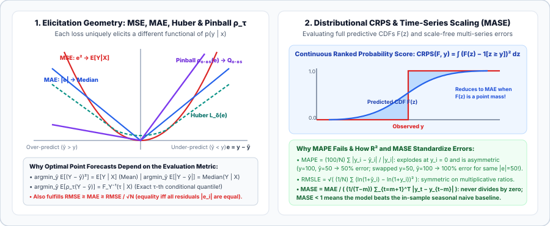

Regression & Forecasting Metrics: MAE, RMSE, Huber, $R^2$, MAPE/MASE, Pinball Loss, and CRPS
When predicting a continuous target $y$, your evaluation metric dictates which statistical property of the conditional distribution $p(y\mid x)$ an optimal model should output. On skewed distributions (such as retail demand or latency), the forecast that minimizes RMSE is systematically different from the forecast that minimizes MAE.

1. Point & Quantile Losses: Functional Elicitation
For residuals $e_i = y_i - \hat y_i$ ($i = 1,\dots,N$), Cauchy–Schwarz guarantees that $\operatorname{MAE}$ and $\operatorname{RMSE}$ satisfy:
The ratio $\operatorname{RMSE}/\operatorname{MAE} \ge 1$ measures outlier concentration: it equals $1$ when all residuals have identical magnitude $|e_i| = c$ and approaches $\sqrt{N}$ when a single extreme outlier dominates. Setting the derivative of expected loss $\frac{\partial}{\partial \hat y}\mathbb E[\ell(Y - \hat y)] = 0$ reveals the exact functional elicited by each loss:
- MSE elicits the Conditional Mean: $\frac{\partial}{\partial \hat y}\mathbb E[(Y - \hat y)^2] = -2\,\mathbb E[Y - \hat y] = 0 \implies \hat y^* = \mathbb E[Y\mid X]$.
- MAE elicits the Conditional Median: Splitting $\mathbb E[|Y - \hat y|]$ at $\hat y$ and differentiating gives $F_Y(\hat y) - (1 - F_Y(\hat y)) = 0 \implies F_Y(\hat y^*) = 0.5$.
- Pinball Loss elicits the $\tau$-Quantile: For target quantile $\tau \in (0, 1)$, $\rho_\tau(e) = \max(\tau e, (\tau - 1)e)$ has expected derivative $F_Y(\hat q_\tau) - \tau = 0 \implies \hat q_\tau^* = F_Y^{-1}(\tau\mid X)$.
| Metric / Loss | Formula | Bayes-Optimal Prediction | Outlier Sensitivity |
|---|---|---|---|
| MSE / RMSE | $\sqrt{\frac{1}{N}\sum_{i=1}^N (y_i - \hat y_i)^2}$ | $\mathbb E[Y\mid X]$ (Mean) | Quadratic ($e^2$) — sensitive to outliers |
| MAE | $\frac{1}{N}\sum_{i=1}^N |y_i - \hat y_i|$ | $\operatorname{Median}(Y\mid X)$ ($Q_{0.5}$) | Linear ($|e|$) — robust to outliers |
| Huber ($\ell_\delta$) | $\frac{1}{2}e^2$ if $|e|\le\delta$, else $\delta(|e| - \frac{1}{2}\delta)$ | Smooth mean–median compromise | Quadratic near $0$, linear in tails |
| Pinball ($\rho_\tau$) | $\max\!\big(\tau(y - \hat q_\tau), (\tau - 1)(y - \hat q_\tau)\big)$ | $F_Y^{-1}(\tau\mid X)$ ($\tau$-Quantile) | Asymmetric linear ($\tau$ vs. $1-\tau$) |
2. Coefficient of Determination ($R^2$) and Adjusted $R^2$
Because $\operatorname{RMSE}$ carries the units of $y$, the Coefficient of Determination ($R^2$) normalizes the residual sum of squares by the variance of predicting the sample mean $\bar y$:
On out-of-sample test sets, $R^2$ can be strictly negative whenever the model's MSE is worse than predicting the constant mean $\bar y$. On training sets, Adjusted $R^2$ penalizes redundant features $p$ by dividing numerator and denominator by their degrees of freedom ($N - p - 1$ and $N - 1$).
3. Relative & Time-Series Metrics: MAPE, RMSLE, and MASE
When aggregating forecast accuracy across series of different scales (e.g., an item selling $10$ units/day vs. $100{,}000$ units/day), standard percentage metrics have distinct trade-offs:
| Metric | Formula | Behavior & Pitfalls |
|---|---|---|
| MAPE | $\frac{100\%}{N}\sum_{i=1}^N \frac{|y_i - \hat y_i|}{|y_i|}$ | Undefined when $y_i = 0$. Asymmetric: for $|e|=50$, $y=100, \hat y=50$ gives $50\%$ error, whereas $y=50, \hat y=100$ gives $100\%$ error (biases models to under-forecast). |
| sMAPE | $\frac{100\%}{N}\sum_{i=1}^N \frac{2|y_i - \hat y_i|}{|y_i| + |\hat y_i|}$ | Bounded in $[0\%, 200\%]$, but still asymmetric around $y_i$ when $|e|$ is large. |
| WAPE | $\frac{\sum_{i=1}^N |y_i - \hat y_i|}{\sum_{i=1}^N |y_i|}$ | Volume-weighted MAE; tolerates intermittent $y_i = 0$ rows, dominated by high-volume series. |
| RMSLE | $\sqrt{\frac{1}{N}\sum_{i=1}^N \big(\ln(1 + \hat y_i) - \ln(1 + y_i)\big)^2}$ | Symmetric for multiplicative ratios ($\hat y = 2y$ and $\hat y = \frac{1}{2}y$ incur equal loss). |
| MASE | $\frac{\frac{1}{H}\sum_{t=T+1}^{T+H} |y_t - \hat y_t|}{\frac{1}{T - m}\sum_{t=m+1}^T |y_t - y_{t-m}|}$ | Scales test MAE by the in-sample seasonal naive MAE (period $m$). Scale-free, symmetric, and well-defined on zero counts; $\operatorname{MASE} < 1$ beats the naive baseline. |
4. Distributional Forecasts: Continuous Ranked Probability Score (CRPS)
To evaluate a full predictive cumulative distribution $F(z)$ against an observed scalar $y$, CRPS (Gneiting & Raftery, 2007) integrates the Brier score over all thresholds $z \in \mathbb R$—which equals twice the integral of Pinball loss across all quantiles $\tau \in [0, 1]$:
The decomposition $\mathbb E_F|X - y| - \frac{1}{2}\mathbb E_F|X - X'|$ (with $X, X' \stackrel{\text{i.i.d.}}{\sim} F$) shows that CRPS rewards both accuracy to $y$ and sharpness (tight spread). For a Gaussian forecast $\mathcal N(\mu, \sigma^2)$ with $z = \frac{y-\mu}{\sigma}$, CRPS has the closed form:
which reduces identically to $\operatorname{MAE} = |y - \mu|$ as $\sigma \to 0$.
5. Reference Implementation in PyTorch
import torch
import math
def pinball_loss(y_true: torch.Tensor, y_quant: torch.Tensor, tau: float) -> float:
e = y_true - y_quant
return torch.maximum(tau * e, (tau - 1.0) * e).mean().item()
def mase_score(y_train: torch.Tensor, y_test: torch.Tensor, y_pred: torch.Tensor, seasonality: int = 1) -> float:
naive_mae = (y_train[seasonality:] - y_train[:-seasonality]).abs().mean()
test_mae = (y_test - y_pred).abs().mean()
return (test_mae / (naive_mae + 1e-12)).item()
def crps_gaussian(y_true: torch.Tensor, mu: torch.Tensor, sigma: torch.Tensor) -> float:
z = (y_true - mu) / (sigma + 1e-12)
Phi = 0.5 * (1.0 + torch.erf(z / math.sqrt(2.0)))
phi = torch.exp(-0.5 * z**2) / math.sqrt(2.0 * math.pi)
return (sigma * (z * (2.0 * Phi - 1.0) + 2.0 * phi - 1.0 / math.sqrt(math.pi))).mean().item()
y_tr = torch.tensor([10., 12., 15., 11., 14., 18.])
y_te = torch.tensor([20., 22., 19.])
y_pr = torch.tensor([19., 21., 20.])
print("MASE (m=1):", round(mase_score(y_tr, y_te, y_pr), 4))
print("Pinball tau=0.9:", round(pinball_loss(y_te, y_pr, tau=0.9), 4))
print("Gaussian CRPS:", round(crps_gaussian(y_te, y_pr, torch.full_like(y_pr, 1.5)), 4))Sources
Huber, Robust Estimation of a Location Parameter (Annals of Mathematical Statistics, 1964); Koenker and Bassett, Regression Quantiles (Econometrica, 1978); Hyndman and Koehler, Another look at measures of forecast accuracy — MASE (International Journal of Forecasting, 2006); Gneiting and Raftery, Strictly Proper Scoring Rules, Prediction, and Estimation (JASA, 2007).